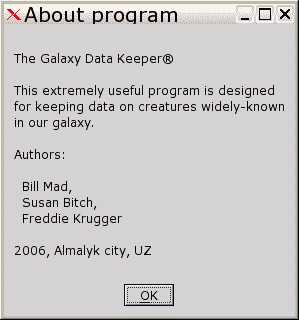

Если не нужно никакого украшательства, то для этой цели - более чем достаточно вывести диалоговое окно "ShowMessage".
По порядку :
Возвращаемся на "mainfo" ( файл "mainform.pas ) .
Роняем на форму компонент GUI->taction :
name:= actShowAbout
procedure tmainfo.showaboutexecute(const sender: TObject);
begin
showmessage(
lineend +
'The Galaxy Data Keeper'+ #174 + lineend +
lineend +
'This extremely useful program is designed' + lineend +
'for keeping data on creatures widely-known' + lineend +
'in our galaxy.' + lineend +
lineend +
'Authors:' + lineend +
lineend +
' Bill Mad,' + lineend +
' Susan Bitch,' + lineend +
' Freddie Krugger' + lineend +
lineend +
'2006, Almalyk city, UZ'+ lineend,
'About program',
[mr_ok], // с единственной кнопкой "OK"
mr_ok, // и по-умолчанию, само-собой, будет эта же кнопка
[],
150 // ширина - как минимум 150 экранных единиц
);
end;Примечания:
- "lineend" - код перевода строки, автоматически настраиваемый на DOS/UNIX-вараинт
- #174 : UNICODE-код значка "copyright registered" ( ® )
Не забудем прописать "msestrings" ( описывающий "lineend" ) в секции "uses" файла "main.pas" :
implementation
uses
main_mfm,
editform,
msewidgets, // for askyesno,
msestrings // for lineend
;
И прописываем вызов "actShowAbout" из подраздела "Help" основного меню программы :
mnuMain :
Данный диалог, будучи вызван, выглядит следующим образом :
